Rhode Island401 HealthApp
Making it easier for Rhode Island residents to report, find and show their vaccination records.
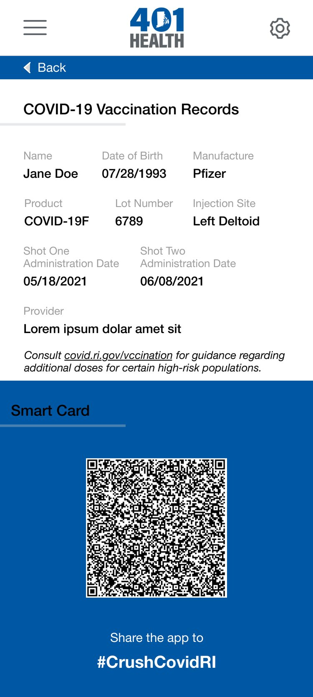
Role
UX Designer, Researcher, Consultant
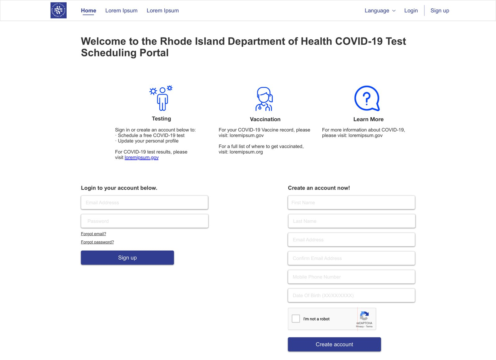
Methods
Review analysis, heuristic review, wireframes
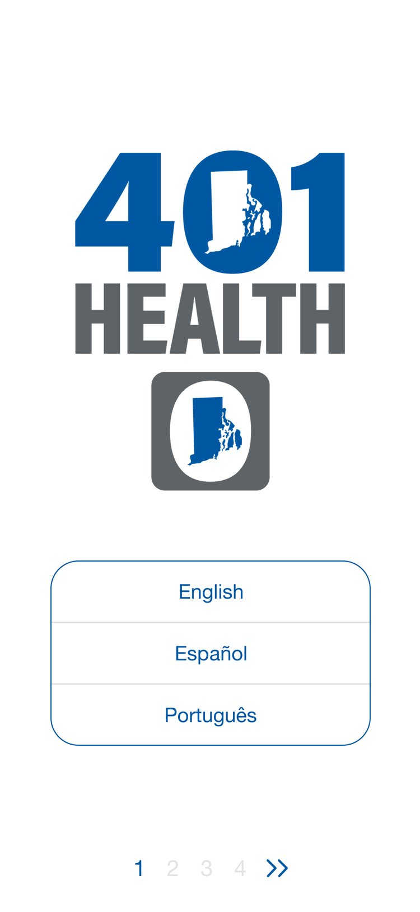
Setting
Public health, COVID-19
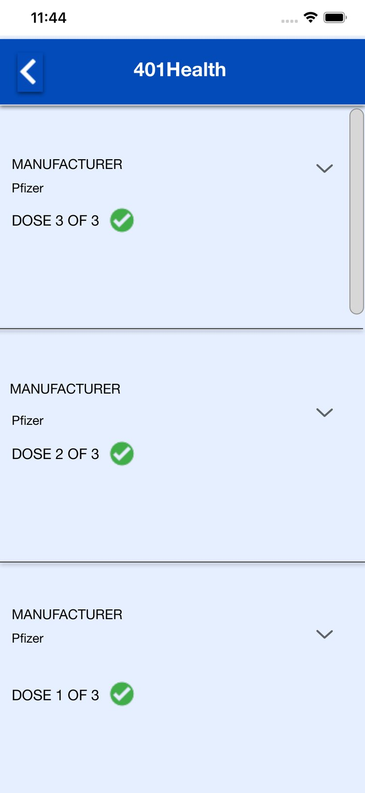
Year
2021
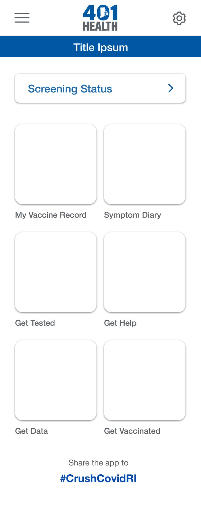
Target
+23%
completed reports (goal)
Overview
A digital vaccination record residents could trust, and show at the door.
The goal was to improve Rhode Island’s vaccine website and health app, so residents could report vaccination information and reach their records more easily, while giving the state reliable, timely data during the COVID-19 pandemic.
It also made proof of vaccination easier to present at large events and venues. The experience aimed to raise completed vaccination reports by 23%.
The challenge
Building trust — how might wecreate a sign-up and onboarding experience that encourages residents to complete their vaccination record?
build trust by clearly explaining privacy, security, and how personal information is used?
show the value of a digital record for events, travel and other verification?
Reducing friction — how might wemake it simple to securely authorise access to existing vaccination records?
make clear where vaccination data comes from and how it is used?
Chapter 01— Discovery & stakeholder alignment
Listening to the state, and to the reviews.
State employees shared user feedback and analytics. I interviewed staff across the program in small groups of no more than two, and mapped the design to the Department of Health’s wider goals (goals 20–23 below).
Two themes kept coming up: frustration at re-entering vaccination information, and doubt about trusting the system with health data. I also analysed Google Play and App Store reviews for recurring pain points: account setup, blocked tasks, and uncertainty about how records were handled.
{kind=link}
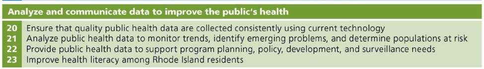
The full table of 23 population health goals opens as a plate.
Signature — The app
Six features, one record.
Terms in several languages, including Portuguese.
A clear card with each COVID-19 dose.
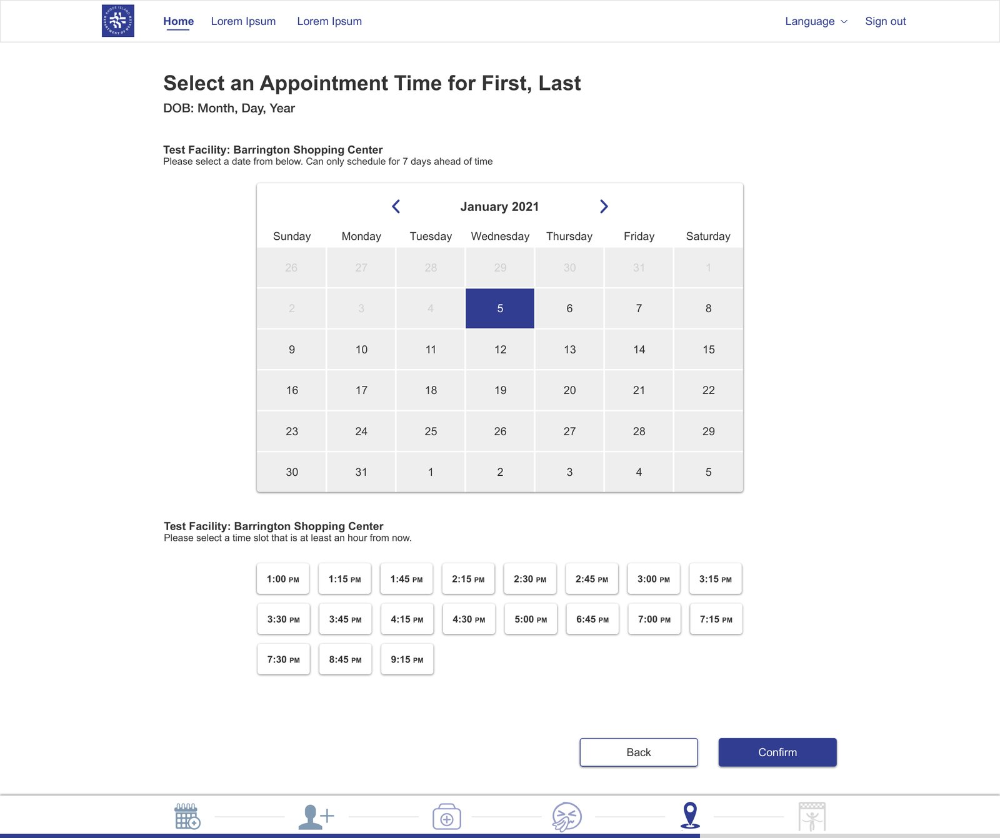
Find and book an appointment.
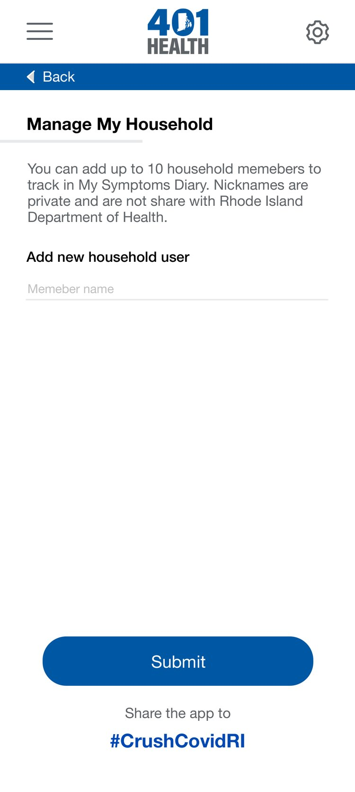
Manage up to 10 household members from one account.
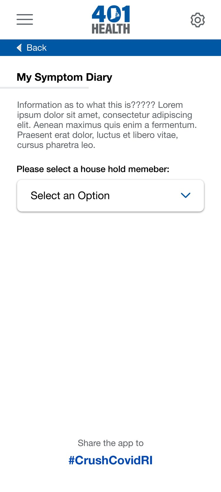
Optional, anonymous post-vaccination reporting.
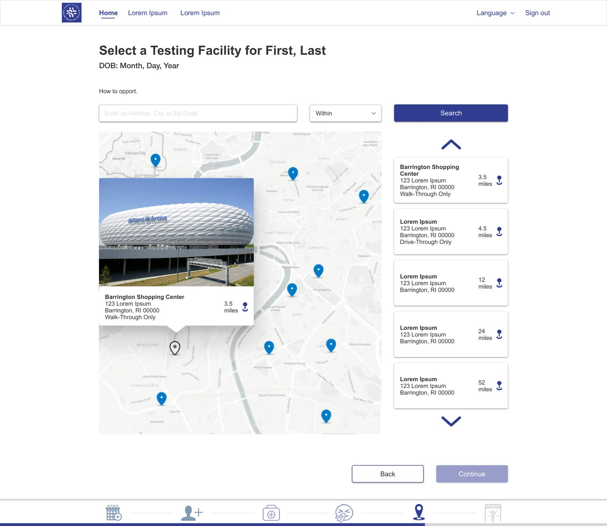
Find nearby COVID-19 testing.
+23%
target increase in completed vaccination reports. This was the project’s goal, not a measured result.
3
languages in onboarding, including Portuguese.
10
household members on one account.
Chapter 02— UX design & feature prioritisation
Records that arrive already filled in.
The solution was a streamlined authorisation flow that pulled records from RICAIR, the state immunisation registry that providers and pharmacies already report to. Once signed in, residents could review their history, add anything missing, and manage their household in one account.
Priorities were usability, accessibility and access to essential public health services.
{kind=link}
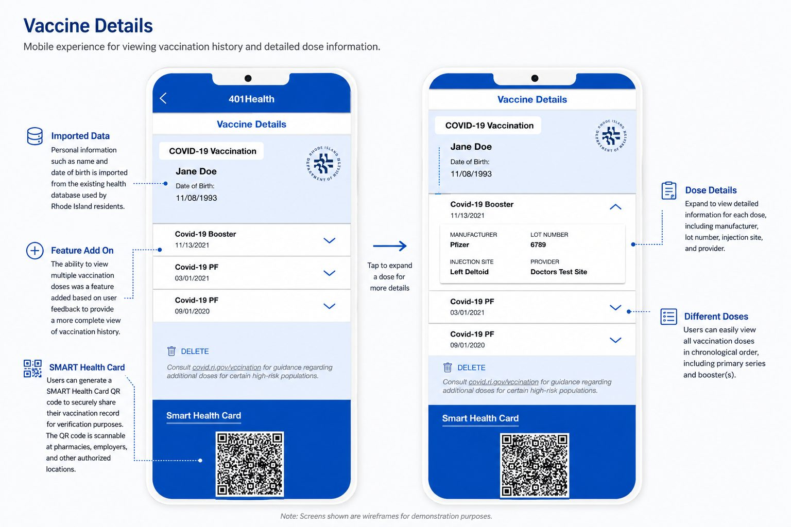
Black-box gallery
The flows, in motion
The desktop portal wireframes, and the App Store reviews behind the redesign.
Results
Target
+23%
increase in completed vaccination reports: the aim of the redesign, not a measured outcome.
Access
3
languages at the start of onboarding, including Portuguese, for Rhode Island’s communities.
Household
10
family members can be managed from a single account.
Features
6
prioritised features, from vaccination status to a testing-location map.
A digital alternative to the paper card.
Long-term adoption metrics were outside the scope of my involvement. The design recommendations focused on:
- Replacing paper vaccination cards with a digital record
- Reducing friction in sign-up and record access
- Explaining clearly how personal data is accessed and used
- A multilingual experience for more residents
- Flexibility for future vaccination programs
Reflection
Working with sensitive health information taught me to remove unnecessary friction while being clear about how personal data is used. Doing it during the pandemic showed me the role UX can play in helping communities reach essential services in uncertain times.
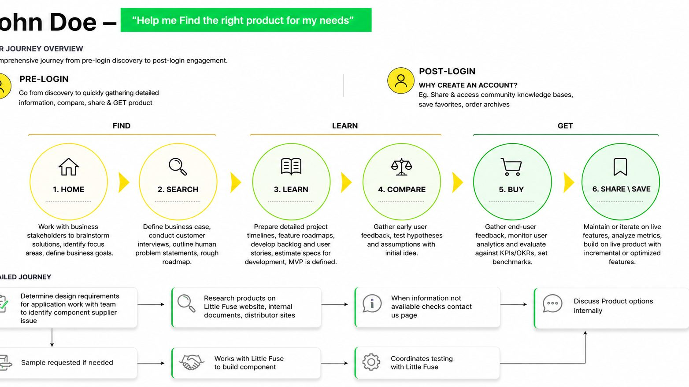
Next room →
Room 04, Littelfuse